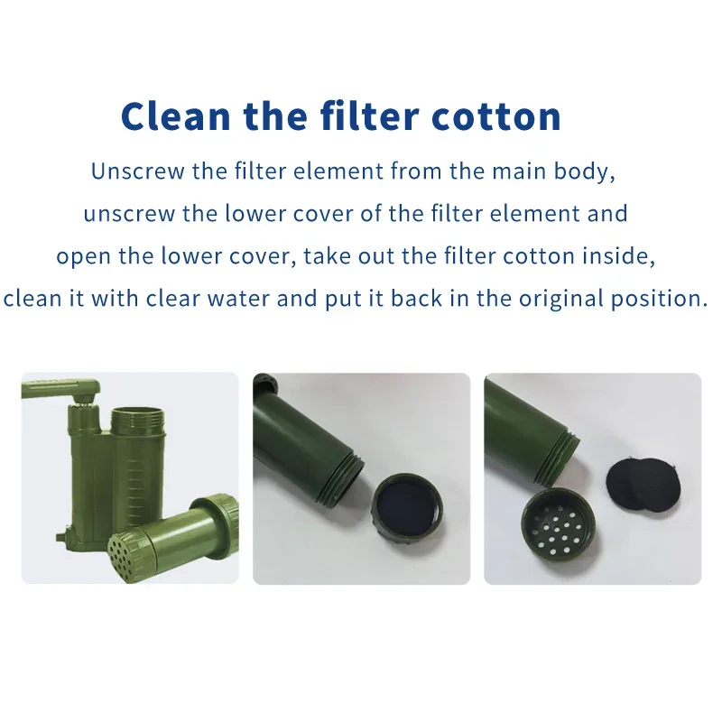
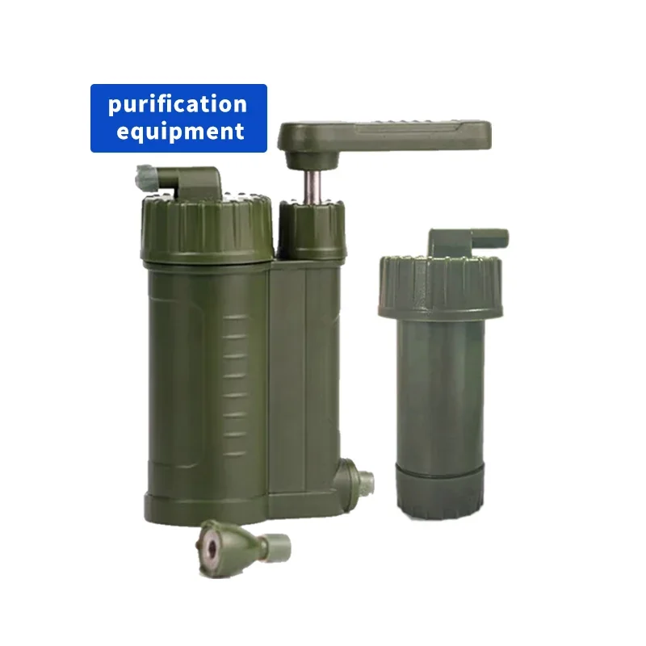
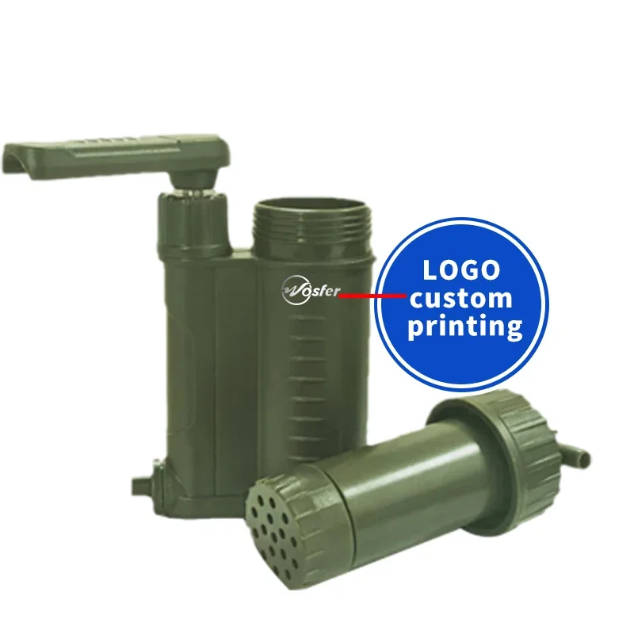
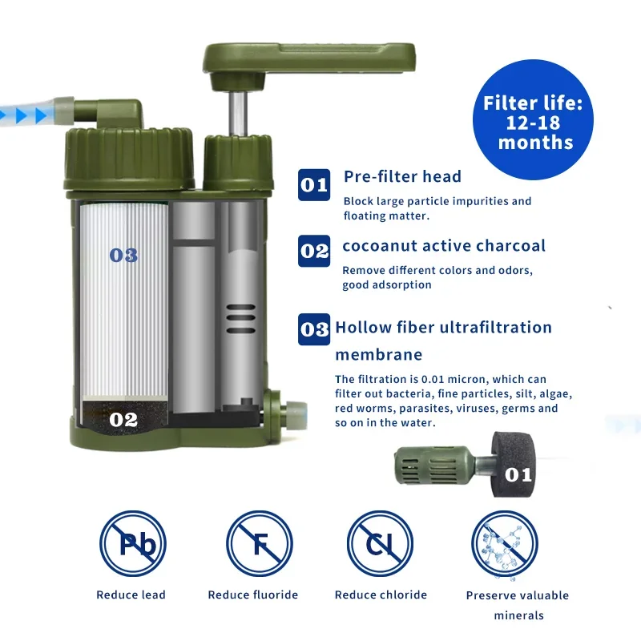
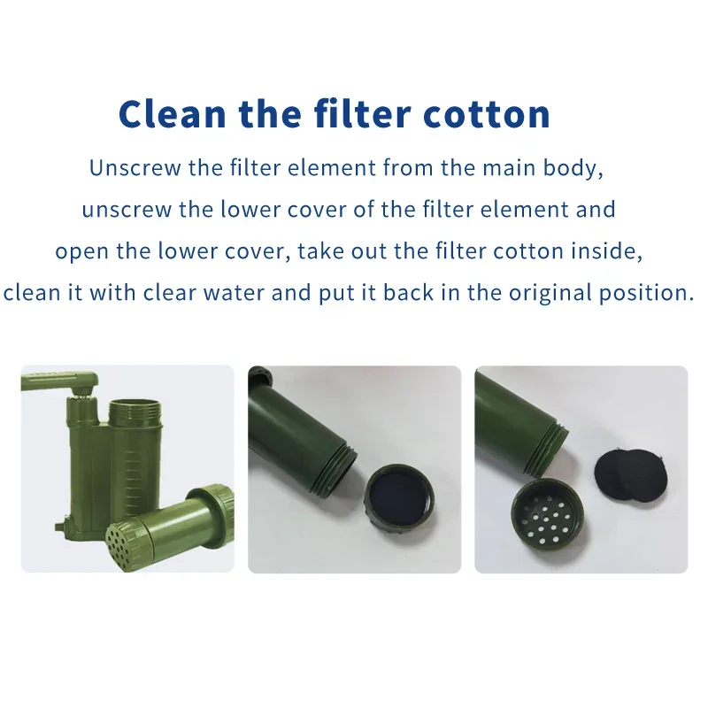
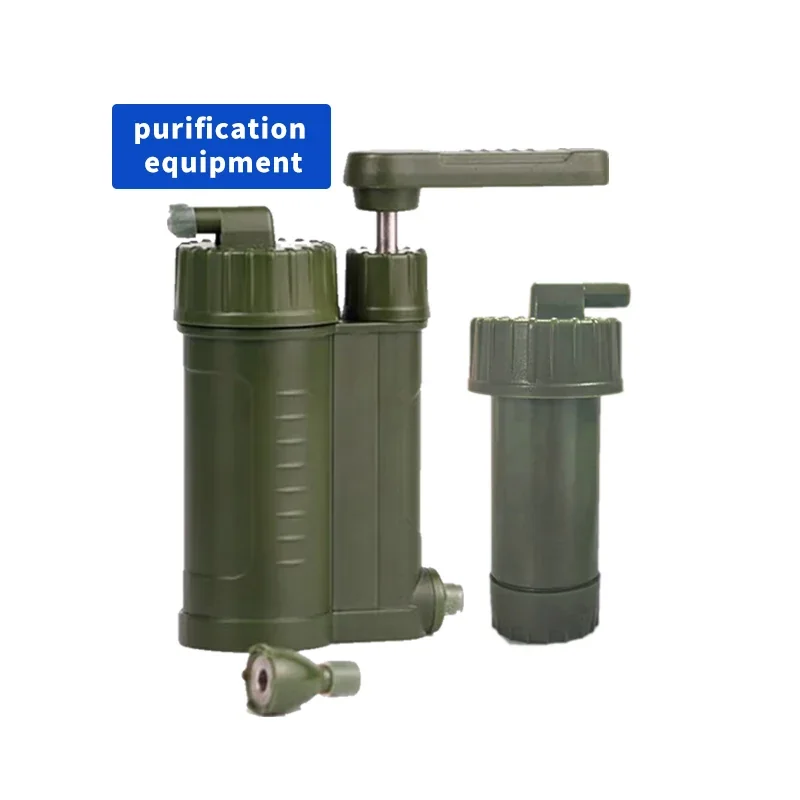
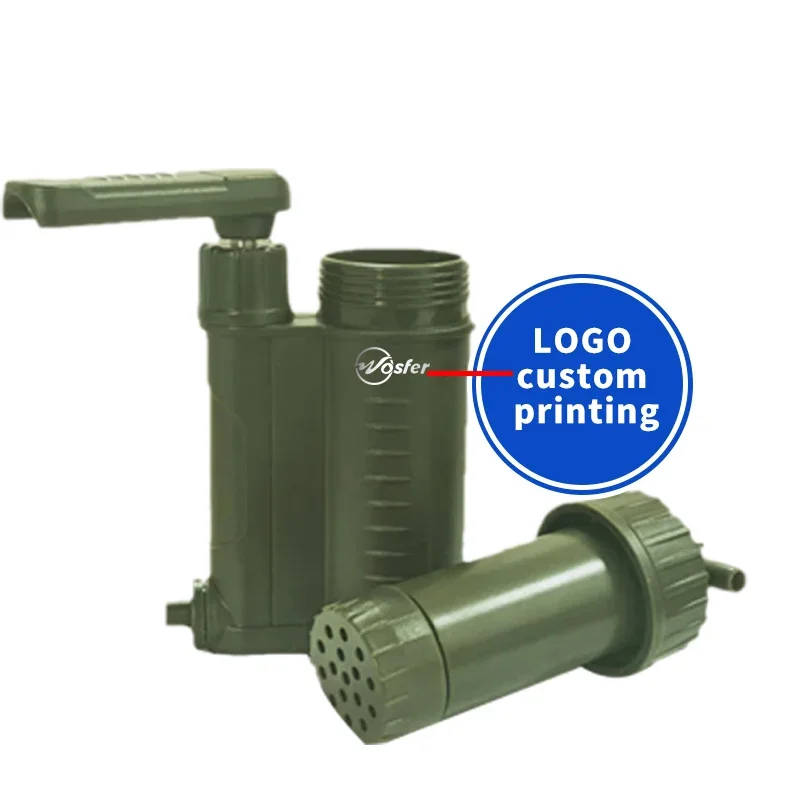
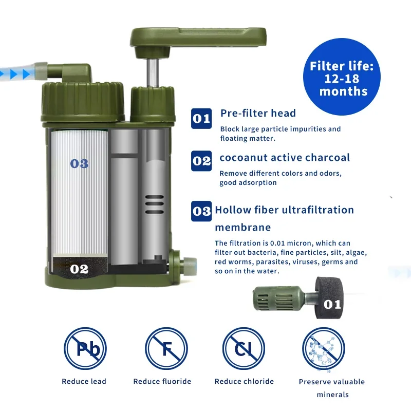

Purificateur d'eau portable 3 en 1 Wosfer : filtre à pression manuelle pour le camping et la consommation d'eau en plein air
Profitez d'une hydratation optimale où que l'aventure vous mène grâce au filtre 3-en-1 Wosfer. Ce purificateur d'eau portable est votre compagnon idéal pour le camping, la randonnée et toutes vos escapades en plein air où l'accès à l'eau potable est essentiel.
Ayez l'assurance d'avoir toujours à portée de main une source fiable d'eau saine et rafraîchissante.
Le filtre Wosfer 3-en-1 utilise un système de filtration performant en trois étapes qui élimine efficacement les impuretés, les bactéries, les protozoaires et les sédiments, transformant même les sources d'eau douteuses en une eau cristalline et rafraîchissante.- Système de filtration en trois étapes : Élimine efficacement les impuretés, les bactéries, les protozoaires et les sédiments pour une eau potable saine.
- Conception portable et légère : Glissez-le facilement dans votre sac à dos ou votre équipement de voyage pour un transport sans effort.
- Fonctionnement par pompe manuelle : Mécanisme de pompe manuelle simple et intuitif, sans électricité ni piles.
Savourez la liberté de savoir que vous pouvez étancher votre soif avec une eau pure et propre où que vos voyages vous mènent. Le filtre Wosfer 3-en-1 vous permet d'explorer en toute confiance et de profiter pleinement de chaque instant de vos aventures en plein air.
Le filtre Wosfer trois-en-un est conçu pour vous fournir une eau potable propre et saine où que vos aventures vous mènent. Ce purificateur d'eau portable à pression manuelle dispose de trois étapes de filtration distinctes, éliminant efficacement une large gamme d'impuretés.
- Système de filtration en trois étapes : Bénéficiez d'une purification supérieure grâce à la puissance combinée de plusieurs couches de filtration, vous assurant une eau propre et rafraîchissante.
- Conception portable et compacte :
- Fonctionnement par pression manuelle :
Gagnez facilement ce purificateur d'eau léger dans votre sac à dos ou votre équipement de camping, ce qui le rend idéal pour les activités de plein air.
Purifiez l'eau sans effort par simple pression de la main. Sans piles ni électricité !
Ce purificateur d'eau est conçu pour résister aux rigueurs d'une utilisation en extérieur tout en offrant des performances exceptionnelles. Sa construction robuste garantit une fiabilité durable.
- Matériaux : Des matériaux robustes et de haute qualité sont utilisés pour l’ensemble de sa fabrication, assurant durabilité et résistance à l’usure.
- Durée de vie du filtre :
Profitez de nombreuses utilisations avant de devoir remplacer le filtre. La durée de vie précise dépendra de la qualité de l’eau et de la fréquence d’utilisation.
Ayez l’esprit tranquille en sachant que vous avez accès à une eau potable saine en toutes circonstances. Ce purificateur élimine les contaminants nocifs, vous offrant une eau saine à chaque gorgée.
- Élimine les bactéries et les protozoaires :
- Réduit les sédiments et les impuretés :
- Durable et écologique :
Préservez votre santé en savourant une eau exempte de micro-organismes nocifs pouvant causer des maladies.
Profitez d'une eau claire et rafraîchissante, sans particules en suspension, sédiments ni autres impuretés pouvant altérer le goût et la limpidité.
Réduisez votre consommation de bouteilles en plastique à usage unique et contribuez à un mode de vie plus durable.
Utiliser le filtre Wosfer trois-en-un est simple et pratique. Remplissez le purificateur d'eau, appuyez plusieurs fois sur la poignée et savourez une eau potable propre en quelques minutes.